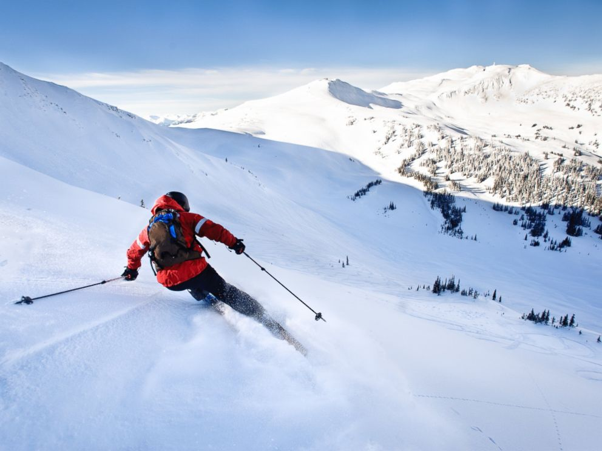
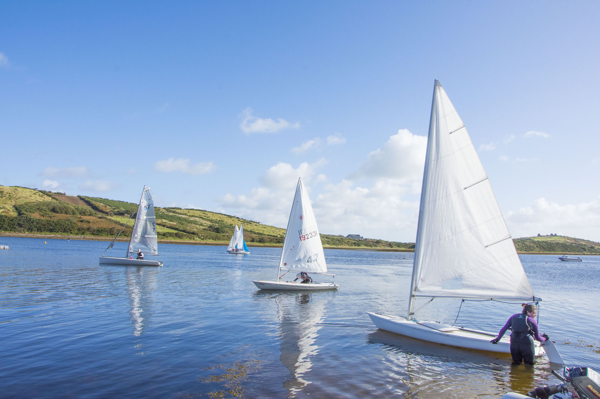

Personal Information |
|
Name: Dawid Czuba |
|
Age 18 year 15-11-2003 |
Pre-education |
|
37 liceum ogolnokształcące im Jaroslawa Dabrowskiego w Warszawie |
subjects followed during previous education |
|
mathematics, physics, information technology |
Extra-curricular activities |
|
Sailing, Skiing |
|  |
Skiing is my passion since I was 3 years old. Then for the first time I tried this sport. From that moment every year I am going to ski. The best thing you can find in this sport is speed and freedom. Speed because then you can perceive you are really living and thanks to enormous surrounding of mountains you can feel freedom. |
|

Also sailing is my hobby. I have been sailing for almost 10 years now. I own sailing and motorboat license which provide mi right to sail big boats. Usually I sail on Mazury(It is like voivodeship in Poland) |